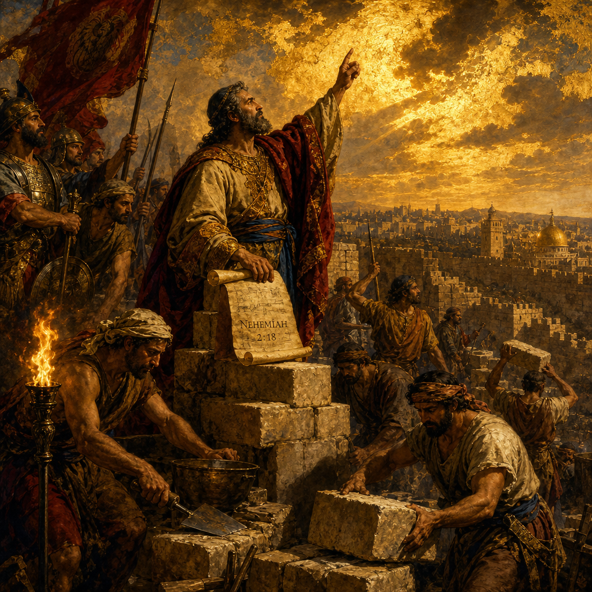

Old Testament · Book 16 of 39
Nehemiah
A cupbearer in a foreign palace hears that his homeland lies in ruins, and gives up comfort to rebuild a broken wall for a God who still keeps covenant.
Nehemiah continues the story that Ezra began: exiles have returned, but Jerusalem itself still lies defenseless, its walls broken and its gates burned. This is the account of one man's grief turning into prayer, and his prayer turning into a wall, a reformed people, and a city fit to hold the presence of a faithful God again.
The joy of the LORD is your strength.
What happens in Nehemiah
Nehemiah, cupbearer to the Persian king Artaxerxes, hears that the remnant back in Judah is in great distress and that Jerusalem's walls lie in rubble. He weeps, fasts, and prays for days before approaching the king, who grants him leave and resources to return and rebuild. Once in Jerusalem, Nehemiah surveys the ruins by night, then rallies the people, family by family, to repair the wall in sections. Opposition comes quickly: Sanballat, Tobiah, and Geshem mock, threaten, and plot ambushes, so the builders work with a trowel in one hand and a weapon in the other, trusting the LORD to fight for them. Inside the city, the rebuilding exposes another wound: some of the wealthy have been exploiting the poor through crushing debt and interest, and Nehemiah confronts this injustice and sets it right. Despite relentless pressure, the wall is finished in just fifty-two days, a feat so swift that even their enemies recognize the hand of God in it. With the wall standing, Ezra the priest brings out the book of the law and reads it publicly to the assembled people, who weep as they hear it, then are told to turn their grief into joy and feasting, for the joy of the LORD is their strength. The people confess their sins, review their history of God's patience and their own rebellion, and bind themselves in a written covenant to keep his commandments. The book closes with Nehemiah making a return trip to Jerusalem, where he finds the people sliding back into old compromises, and he moves decisively to cleanse the temple, restore proper worship, enforce the Sabbath, and confront mixed marriages that threatened the people's devotion to the LORD.
Why it matters
Nehemiah was written to show that rebuilding a people is never only a matter of stone and timber; it requires a Living God who hears prayer, moves kings' hearts, and strengthens ordinary people to finish hard work in the face of real opposition. Nehemiah's own pattern, grief that leads to prayer, prayer that leads to planning, and planning that leads to courageous action, offers a model for any believer facing a daunting task entrusted to them by their Father. The public reading of the law in chapter eight, met with both tears and commanded joy, reminds every generation that Scripture is not merely information but the living voice of God meant to restore a wandering people to relationship with him. And Nehemiah's returning vigilance against compromise in the final chapter is a tender warning: walls can be rebuilt in fifty-two days, but guarding the heart's devotion to a faithful Father is a work that never truly ends.
Jump to a chapter
Nehemiah has 13 chapters — select one to begin reading there.